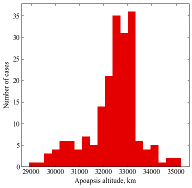
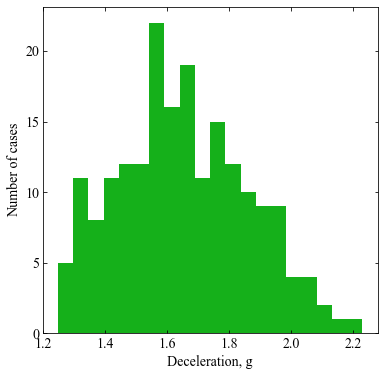
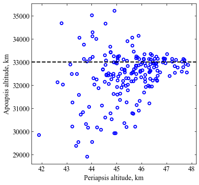

Example - 53 - Mars SmallSat Aerocapture Demonstration - Part 3¶
In this example, we will use Monte Carlo simulations to assess flight performance. Reference: M.S.Werner and R.D.Braun, Mission Design and Performance Analysis of a Smallsat Aerocapture Flight Test, Journal of Spacecraft and Rockets, DOI: 10.2514/1.A33997
[1]:
from AMAT.planet import Planet
from AMAT.vehicle import Vehicle
[2]:
import numpy as np
from scipy import interpolate
import pandas as pd
import matplotlib.pyplot as plt
from matplotlib import rcParams
from matplotlib.patches import Polygon
[3]:
# Set up the planet and atmosphere model.
planet=Planet("MARS")
planet.loadAtmosphereModel('../atmdata/Mars/mars-gram-avg.dat', 0 , 1 ,2, 3)
planet.h_skip = 150000.0
planet.h_low=10.0E3
# Set up the drag modulation vehicle.
vehicle=Vehicle('MarsSmallSat1', 25.97, 66.4, 0.0, np.pi*0.25**2, 0.0, 0.0563, planet)
vehicle.setInitialState(150.0,0.0,0.0,5.74,0.0,-12.12,0.0,0.0)
vehicle.setSolverParams(1E-6)
vehicle.setDragModulationVehicleParams(66.4,4.72)
# Set up the drag modulation entry phase guidance parameters.
vehicle.setDragEntryPhaseParams(2.0, 15.0, 101, -200.0)
# Set the target orbit parameters.
vehicle.setTargetOrbitParams(450.0, 33000.0, 20.0)
# Define the path to atmospheric files to be used for the Monte Carlo simulations.
atmfiles = ['../atmdata/Mars/LAT00N-N1000.txt']
# Set up the Monte Carlo simulation for drag modulation.
# NPOS = 156, NMONTE = 1000
# Target EFPA = -12.05 deg
# EFPA 1-sigma error = +/- 0.067 deg
# Nominal beta_1 = 66.4 kg/m2
# beta_1 1-sigma = 0.0
# guidance time step for entry = 1.0s (Freq. = 1 Hz)
# guidance time step after jettison = 1.0 s
# max. solver time step = 0.1 s
# max. time used by solver = 2400 s
vehicle.setupMonteCarloSimulationD(156, 1000, atmfiles, 0 , 1, 2, 3, 4, True,
-11.80, 0.0667, 66.4, 0.0,
1.0, 1.0, 0.1, 2400.0)
# Run 200 trajectories
vehicle.runMonteCarloD(200, '../data/werner2019/MCB2-Mars')
BATCH :../data/werner2019/MCB2-Mars, RUN #: 1, PROF: ../atmdata/Mars/LAT00N-N1000.txt, SAMPLE #: 323, EFPA: -11.79, SIGMA: -0.29, APO : 32577.73
BATCH :../data/werner2019/MCB2-Mars, RUN #: 2, PROF: ../atmdata/Mars/LAT00N-N1000.txt, SAMPLE #: 641, EFPA: -11.81, SIGMA: 0.18, APO : 31263.06
BATCH :../data/werner2019/MCB2-Mars, RUN #: 3, PROF: ../atmdata/Mars/LAT00N-N1000.txt, SAMPLE #: 120, EFPA: -11.93, SIGMA: -2.68, APO : 32488.87
BATCH :../data/werner2019/MCB2-Mars, RUN #: 4, PROF: ../atmdata/Mars/LAT00N-N1000.txt, SAMPLE #: 971, EFPA: -11.92, SIGMA: 1.56, APO : 34683.39
/home/athul/anaconda3/lib/python3.7/site-packages/AMAT-2.1.3-py3.7.egg/AMAT/vehicle.py:504: RuntimeWarning: invalid value encountered in sqrt
ans[:] = 1.8980E-8 * (rho_vec[:]/self.RN)**0.5 * v[:]**3.0
BATCH :../data/werner2019/MCB2-Mars, RUN #: 5, PROF: ../atmdata/Mars/LAT00N-N1000.txt, SAMPLE #: 165, EFPA: -11.83, SIGMA: -2.05, APO : 33118.19
BATCH :../data/werner2019/MCB2-Mars, RUN #: 6, PROF: ../atmdata/Mars/LAT00N-N1000.txt, SAMPLE #: 529, EFPA: -11.75, SIGMA: 0.25, APO : 32952.30
BATCH :../data/werner2019/MCB2-Mars, RUN #: 7, PROF: ../atmdata/Mars/LAT00N-N1000.txt, SAMPLE #: 57, EFPA: -11.88, SIGMA: 0.37, APO : 33138.68
BATCH :../data/werner2019/MCB2-Mars, RUN #: 8, PROF: ../atmdata/Mars/LAT00N-N1000.txt, SAMPLE #: 158, EFPA: -11.77, SIGMA: 0.27, APO : 31926.75
BATCH :../data/werner2019/MCB2-Mars, RUN #: 9, PROF: ../atmdata/Mars/LAT00N-N1000.txt, SAMPLE #: 623, EFPA: -11.76, SIGMA: 0.86, APO : 32279.26
BATCH :../data/werner2019/MCB2-Mars, RUN #: 10, PROF: ../atmdata/Mars/LAT00N-N1000.txt, SAMPLE #: 335, EFPA: -11.91, SIGMA: -1.30, APO : 34055.62
BATCH :../data/werner2019/MCB2-Mars, RUN #: 11, PROF: ../atmdata/Mars/LAT00N-N1000.txt, SAMPLE #: 360, EFPA: -11.79, SIGMA: -1.09, APO : 32848.65
BATCH :../data/werner2019/MCB2-Mars, RUN #: 12, PROF: ../atmdata/Mars/LAT00N-N1000.txt, SAMPLE #: 679, EFPA: -11.77, SIGMA: 1.58, APO : 31324.80
BATCH :../data/werner2019/MCB2-Mars, RUN #: 13, PROF: ../atmdata/Mars/LAT00N-N1000.txt, SAMPLE #: 820, EFPA: -11.86, SIGMA: -0.50, APO : 34666.91
BATCH :../data/werner2019/MCB2-Mars, RUN #: 14, PROF: ../atmdata/Mars/LAT00N-N1000.txt, SAMPLE #: 522, EFPA: -11.76, SIGMA: -1.80, APO : 32589.29
BATCH :../data/werner2019/MCB2-Mars, RUN #: 15, PROF: ../atmdata/Mars/LAT00N-N1000.txt, SAMPLE #: 356, EFPA: -11.81, SIGMA: -0.98, APO : 32025.72
BATCH :../data/werner2019/MCB2-Mars, RUN #: 16, PROF: ../atmdata/Mars/LAT00N-N1000.txt, SAMPLE #: 400, EFPA: -11.82, SIGMA: -0.93, APO : 32681.15
BATCH :../data/werner2019/MCB2-Mars, RUN #: 17, PROF: ../atmdata/Mars/LAT00N-N1000.txt, SAMPLE #: 153, EFPA: -11.77, SIGMA: 2.31, APO : 30904.72
BATCH :../data/werner2019/MCB2-Mars, RUN #: 18, PROF: ../atmdata/Mars/LAT00N-N1000.txt, SAMPLE #: 321, EFPA: -11.83, SIGMA: -1.58, APO : 32500.60
BATCH :../data/werner2019/MCB2-Mars, RUN #: 19, PROF: ../atmdata/Mars/LAT00N-N1000.txt, SAMPLE #: 243, EFPA: -11.92, SIGMA: -0.53, APO : 32899.73
BATCH :../data/werner2019/MCB2-Mars, RUN #: 20, PROF: ../atmdata/Mars/LAT00N-N1000.txt, SAMPLE #: 220, EFPA: -11.82, SIGMA: 0.79, APO : 29928.16
BATCH :../data/werner2019/MCB2-Mars, RUN #: 21, PROF: ../atmdata/Mars/LAT00N-N1000.txt, SAMPLE #: 761, EFPA: -11.74, SIGMA: 0.01, APO : 32632.82
BATCH :../data/werner2019/MCB2-Mars, RUN #: 22, PROF: ../atmdata/Mars/LAT00N-N1000.txt, SAMPLE #: 518, EFPA: -11.83, SIGMA: 1.50, APO : 30531.60
BATCH :../data/werner2019/MCB2-Mars, RUN #: 23, PROF: ../atmdata/Mars/LAT00N-N1000.txt, SAMPLE #: 624, EFPA: -11.68, SIGMA: 0.79, APO : 32593.76
BATCH :../data/werner2019/MCB2-Mars, RUN #: 24, PROF: ../atmdata/Mars/LAT00N-N1000.txt, SAMPLE #: 553, EFPA: -11.74, SIGMA: 0.73, APO : 33146.31
BATCH :../data/werner2019/MCB2-Mars, RUN #: 25, PROF: ../atmdata/Mars/LAT00N-N1000.txt, SAMPLE #: 824, EFPA: -11.76, SIGMA: -0.21, APO : 32564.92
BATCH :../data/werner2019/MCB2-Mars, RUN #: 26, PROF: ../atmdata/Mars/LAT00N-N1000.txt, SAMPLE #: 815, EFPA: -11.76, SIGMA: -0.58, APO : 31947.94
BATCH :../data/werner2019/MCB2-Mars, RUN #: 27, PROF: ../atmdata/Mars/LAT00N-N1000.txt, SAMPLE #: 543, EFPA: -11.84, SIGMA: -1.83, APO : 32945.79
BATCH :../data/werner2019/MCB2-Mars, RUN #: 28, PROF: ../atmdata/Mars/LAT00N-N1000.txt, SAMPLE #: 855, EFPA: -11.77, SIGMA: -2.10, APO : 33343.44
BATCH :../data/werner2019/MCB2-Mars, RUN #: 29, PROF: ../atmdata/Mars/LAT00N-N1000.txt, SAMPLE #: 863, EFPA: -11.90, SIGMA: 0.89, APO : 30733.56
BATCH :../data/werner2019/MCB2-Mars, RUN #: 30, PROF: ../atmdata/Mars/LAT00N-N1000.txt, SAMPLE #: 809, EFPA: -11.72, SIGMA: -0.91, APO : 33349.24
BATCH :../data/werner2019/MCB2-Mars, RUN #: 31, PROF: ../atmdata/Mars/LAT00N-N1000.txt, SAMPLE #: 805, EFPA: -11.69, SIGMA: -0.54, APO : 32828.30
BATCH :../data/werner2019/MCB2-Mars, RUN #: 32, PROF: ../atmdata/Mars/LAT00N-N1000.txt, SAMPLE #: 938, EFPA: -11.85, SIGMA: 2.03, APO : 34293.72
BATCH :../data/werner2019/MCB2-Mars, RUN #: 33, PROF: ../atmdata/Mars/LAT00N-N1000.txt, SAMPLE #: 271, EFPA: -11.90, SIGMA: -0.44, APO : 33137.81
BATCH :../data/werner2019/MCB2-Mars, RUN #: 34, PROF: ../atmdata/Mars/LAT00N-N1000.txt, SAMPLE #: 579, EFPA: -11.79, SIGMA: 0.83, APO : 32171.64
BATCH :../data/werner2019/MCB2-Mars, RUN #: 35, PROF: ../atmdata/Mars/LAT00N-N1000.txt, SAMPLE #: 947, EFPA: -11.91, SIGMA: -1.39, APO : 31584.52
BATCH :../data/werner2019/MCB2-Mars, RUN #: 36, PROF: ../atmdata/Mars/LAT00N-N1000.txt, SAMPLE #: 851, EFPA: -11.67, SIGMA: 0.35, APO : 32554.18
BATCH :../data/werner2019/MCB2-Mars, RUN #: 37, PROF: ../atmdata/Mars/LAT00N-N1000.txt, SAMPLE #: 917, EFPA: -11.78, SIGMA: -0.55, APO : 33133.24
BATCH :../data/werner2019/MCB2-Mars, RUN #: 38, PROF: ../atmdata/Mars/LAT00N-N1000.txt, SAMPLE #: 34, EFPA: -11.84, SIGMA: 0.52, APO : 33299.46
BATCH :../data/werner2019/MCB2-Mars, RUN #: 39, PROF: ../atmdata/Mars/LAT00N-N1000.txt, SAMPLE #: 417, EFPA: -11.82, SIGMA: 1.67, APO : 33257.16
BATCH :../data/werner2019/MCB2-Mars, RUN #: 40, PROF: ../atmdata/Mars/LAT00N-N1000.txt, SAMPLE #: 905, EFPA: -11.79, SIGMA: -0.99, APO : 32695.03
BATCH :../data/werner2019/MCB2-Mars, RUN #: 41, PROF: ../atmdata/Mars/LAT00N-N1000.txt, SAMPLE #: 562, EFPA: -11.83, SIGMA: -0.14, APO : 32995.77
BATCH :../data/werner2019/MCB2-Mars, RUN #: 42, PROF: ../atmdata/Mars/LAT00N-N1000.txt, SAMPLE #: 951, EFPA: -11.82, SIGMA: -0.46, APO : 31976.55
BATCH :../data/werner2019/MCB2-Mars, RUN #: 43, PROF: ../atmdata/Mars/LAT00N-N1000.txt, SAMPLE #: 572, EFPA: -11.88, SIGMA: -0.50, APO : 33227.59
BATCH :../data/werner2019/MCB2-Mars, RUN #: 44, PROF: ../atmdata/Mars/LAT00N-N1000.txt, SAMPLE #: 445, EFPA: -11.84, SIGMA: -0.92, APO : 32261.02
BATCH :../data/werner2019/MCB2-Mars, RUN #: 45, PROF: ../atmdata/Mars/LAT00N-N1000.txt, SAMPLE #: 127, EFPA: -11.75, SIGMA: -0.11, APO : 32204.43
BATCH :../data/werner2019/MCB2-Mars, RUN #: 46, PROF: ../atmdata/Mars/LAT00N-N1000.txt, SAMPLE #: 834, EFPA: -11.80, SIGMA: -1.26, APO : 32546.44
BATCH :../data/werner2019/MCB2-Mars, RUN #: 47, PROF: ../atmdata/Mars/LAT00N-N1000.txt, SAMPLE #: 430, EFPA: -11.83, SIGMA: 0.05, APO : 32395.95
BATCH :../data/werner2019/MCB2-Mars, RUN #: 48, PROF: ../atmdata/Mars/LAT00N-N1000.txt, SAMPLE #: 764, EFPA: -11.78, SIGMA: -2.64, APO : 32847.73
BATCH :../data/werner2019/MCB2-Mars, RUN #: 49, PROF: ../atmdata/Mars/LAT00N-N1000.txt, SAMPLE #: 428, EFPA: -11.81, SIGMA: 0.65, APO : 33907.42
BATCH :../data/werner2019/MCB2-Mars, RUN #: 50, PROF: ../atmdata/Mars/LAT00N-N1000.txt, SAMPLE #: 748, EFPA: -11.82, SIGMA: -0.93, APO : 30363.41
BATCH :../data/werner2019/MCB2-Mars, RUN #: 51, PROF: ../atmdata/Mars/LAT00N-N1000.txt, SAMPLE #: 576, EFPA: -11.78, SIGMA: 0.36, APO : 32627.78
BATCH :../data/werner2019/MCB2-Mars, RUN #: 52, PROF: ../atmdata/Mars/LAT00N-N1000.txt, SAMPLE #: 621, EFPA: -11.73, SIGMA: 0.33, APO : 32560.41
BATCH :../data/werner2019/MCB2-Mars, RUN #: 53, PROF: ../atmdata/Mars/LAT00N-N1000.txt, SAMPLE #: 746, EFPA: -11.88, SIGMA: 3.59, APO : 27525.65
BATCH :../data/werner2019/MCB2-Mars, RUN #: 54, PROF: ../atmdata/Mars/LAT00N-N1000.txt, SAMPLE #: 299, EFPA: -11.83, SIGMA: -0.79, APO : 33239.30
BATCH :../data/werner2019/MCB2-Mars, RUN #: 55, PROF: ../atmdata/Mars/LAT00N-N1000.txt, SAMPLE #: 757, EFPA: -11.72, SIGMA: 0.41, APO : 33163.05
BATCH :../data/werner2019/MCB2-Mars, RUN #: 56, PROF: ../atmdata/Mars/LAT00N-N1000.txt, SAMPLE #: 568, EFPA: -11.76, SIGMA: -1.06, APO : 33302.55
BATCH :../data/werner2019/MCB2-Mars, RUN #: 57, PROF: ../atmdata/Mars/LAT00N-N1000.txt, SAMPLE #: 945, EFPA: -11.66, SIGMA: -0.64, APO : 32926.05
BATCH :../data/werner2019/MCB2-Mars, RUN #: 58, PROF: ../atmdata/Mars/LAT00N-N1000.txt, SAMPLE #: 729, EFPA: -11.76, SIGMA: 2.08, APO : 32448.62
BATCH :../data/werner2019/MCB2-Mars, RUN #: 59, PROF: ../atmdata/Mars/LAT00N-N1000.txt, SAMPLE #: 589, EFPA: -11.69, SIGMA: -1.75, APO : 33098.32
BATCH :../data/werner2019/MCB2-Mars, RUN #: 60, PROF: ../atmdata/Mars/LAT00N-N1000.txt, SAMPLE #: 488, EFPA: -11.80, SIGMA: -0.44, APO : 33247.83
BATCH :../data/werner2019/MCB2-Mars, RUN #: 61, PROF: ../atmdata/Mars/LAT00N-N1000.txt, SAMPLE #: 193, EFPA: -11.69, SIGMA: -0.68, APO : 32782.73
BATCH :../data/werner2019/MCB2-Mars, RUN #: 62, PROF: ../atmdata/Mars/LAT00N-N1000.txt, SAMPLE #: 306, EFPA: -11.79, SIGMA: 0.12, APO : 32744.57
BATCH :../data/werner2019/MCB2-Mars, RUN #: 63, PROF: ../atmdata/Mars/LAT00N-N1000.txt, SAMPLE #: 459, EFPA: -11.97, SIGMA: 1.23, APO : 29849.99
BATCH :../data/werner2019/MCB2-Mars, RUN #: 64, PROF: ../atmdata/Mars/LAT00N-N1000.txt, SAMPLE #: 478, EFPA: -11.85, SIGMA: -2.99, APO : 32495.06
BATCH :../data/werner2019/MCB2-Mars, RUN #: 65, PROF: ../atmdata/Mars/LAT00N-N1000.txt, SAMPLE #: 30, EFPA: -11.88, SIGMA: 1.08, APO : 30837.00
BATCH :../data/werner2019/MCB2-Mars, RUN #: 66, PROF: ../atmdata/Mars/LAT00N-N1000.txt, SAMPLE #: 752, EFPA: -11.69, SIGMA: -1.15, APO : 32767.21
BATCH :../data/werner2019/MCB2-Mars, RUN #: 67, PROF: ../atmdata/Mars/LAT00N-N1000.txt, SAMPLE #: 584, EFPA: -11.80, SIGMA: 0.31, APO : 32557.71
BATCH :../data/werner2019/MCB2-Mars, RUN #: 68, PROF: ../atmdata/Mars/LAT00N-N1000.txt, SAMPLE #: 632, EFPA: -11.86, SIGMA: -0.36, APO : 32676.39
BATCH :../data/werner2019/MCB2-Mars, RUN #: 69, PROF: ../atmdata/Mars/LAT00N-N1000.txt, SAMPLE #: 709, EFPA: -11.82, SIGMA: -0.93, APO : 32634.53
BATCH :../data/werner2019/MCB2-Mars, RUN #: 70, PROF: ../atmdata/Mars/LAT00N-N1000.txt, SAMPLE #: 154, EFPA: -11.87, SIGMA: 0.63, APO : 29549.68
BATCH :../data/werner2019/MCB2-Mars, RUN #: 71, PROF: ../atmdata/Mars/LAT00N-N1000.txt, SAMPLE #: 468, EFPA: -11.77, SIGMA: 0.31, APO : 33146.20
BATCH :../data/werner2019/MCB2-Mars, RUN #: 72, PROF: ../atmdata/Mars/LAT00N-N1000.txt, SAMPLE #: 428, EFPA: -11.77, SIGMA: -1.48, APO : 33119.29
BATCH :../data/werner2019/MCB2-Mars, RUN #: 73, PROF: ../atmdata/Mars/LAT00N-N1000.txt, SAMPLE #: 768, EFPA: -11.83, SIGMA: -1.23, APO : 32376.70
BATCH :../data/werner2019/MCB2-Mars, RUN #: 74, PROF: ../atmdata/Mars/LAT00N-N1000.txt, SAMPLE #: 447, EFPA: -11.74, SIGMA: -0.32, APO : 32195.44
BATCH :../data/werner2019/MCB2-Mars, RUN #: 75, PROF: ../atmdata/Mars/LAT00N-N1000.txt, SAMPLE #: 556, EFPA: -11.75, SIGMA: -0.06, APO : 32280.00
BATCH :../data/werner2019/MCB2-Mars, RUN #: 76, PROF: ../atmdata/Mars/LAT00N-N1000.txt, SAMPLE #: 758, EFPA: -11.79, SIGMA: 0.25, APO : 30210.66
BATCH :../data/werner2019/MCB2-Mars, RUN #: 77, PROF: ../atmdata/Mars/LAT00N-N1000.txt, SAMPLE #: 168, EFPA: -11.93, SIGMA: 2.43, APO : 27460.65
BATCH :../data/werner2019/MCB2-Mars, RUN #: 78, PROF: ../atmdata/Mars/LAT00N-N1000.txt, SAMPLE #: 143, EFPA: -11.79, SIGMA: 0.25, APO : 33456.57
BATCH :../data/werner2019/MCB2-Mars, RUN #: 79, PROF: ../atmdata/Mars/LAT00N-N1000.txt, SAMPLE #: 754, EFPA: -11.80, SIGMA: -0.14, APO : 33714.98
BATCH :../data/werner2019/MCB2-Mars, RUN #: 80, PROF: ../atmdata/Mars/LAT00N-N1000.txt, SAMPLE #: 180, EFPA: -11.71, SIGMA: -0.71, APO : 33022.70
BATCH :../data/werner2019/MCB2-Mars, RUN #: 81, PROF: ../atmdata/Mars/LAT00N-N1000.txt, SAMPLE #: 898, EFPA: -11.77, SIGMA: -2.06, APO : 32980.24
BATCH :../data/werner2019/MCB2-Mars, RUN #: 82, PROF: ../atmdata/Mars/LAT00N-N1000.txt, SAMPLE #: 268, EFPA: -11.87, SIGMA: 0.47, APO : 32306.71
BATCH :../data/werner2019/MCB2-Mars, RUN #: 83, PROF: ../atmdata/Mars/LAT00N-N1000.txt, SAMPLE #: 774, EFPA: -11.77, SIGMA: -2.42, APO : 32904.05
BATCH :../data/werner2019/MCB2-Mars, RUN #: 84, PROF: ../atmdata/Mars/LAT00N-N1000.txt, SAMPLE #: 530, EFPA: -11.84, SIGMA: 0.14, APO : 32434.25
BATCH :../data/werner2019/MCB2-Mars, RUN #: 85, PROF: ../atmdata/Mars/LAT00N-N1000.txt, SAMPLE #: 67, EFPA: -11.67, SIGMA: 1.93, APO : 33094.71
BATCH :../data/werner2019/MCB2-Mars, RUN #: 86, PROF: ../atmdata/Mars/LAT00N-N1000.txt, SAMPLE #: 461, EFPA: -11.85, SIGMA: -0.61, APO : 30606.20
BATCH :../data/werner2019/MCB2-Mars, RUN #: 87, PROF: ../atmdata/Mars/LAT00N-N1000.txt, SAMPLE #: 243, EFPA: -11.85, SIGMA: -1.20, APO : 33668.52
BATCH :../data/werner2019/MCB2-Mars, RUN #: 88, PROF: ../atmdata/Mars/LAT00N-N1000.txt, SAMPLE #: 997, EFPA: -11.86, SIGMA: -0.07, APO : 31123.70
BATCH :../data/werner2019/MCB2-Mars, RUN #: 89, PROF: ../atmdata/Mars/LAT00N-N1000.txt, SAMPLE #: 722, EFPA: -11.91, SIGMA: 1.14, APO : 30216.72
BATCH :../data/werner2019/MCB2-Mars, RUN #: 90, PROF: ../atmdata/Mars/LAT00N-N1000.txt, SAMPLE #: 348, EFPA: -11.89, SIGMA: -1.22, APO : 33758.54
BATCH :../data/werner2019/MCB2-Mars, RUN #: 91, PROF: ../atmdata/Mars/LAT00N-N1000.txt, SAMPLE #: 145, EFPA: -11.83, SIGMA: 1.17, APO : 30788.83
BATCH :../data/werner2019/MCB2-Mars, RUN #: 92, PROF: ../atmdata/Mars/LAT00N-N1000.txt, SAMPLE #: 62, EFPA: -11.69, SIGMA: -0.52, APO : 33140.54
BATCH :../data/werner2019/MCB2-Mars, RUN #: 93, PROF: ../atmdata/Mars/LAT00N-N1000.txt, SAMPLE #: 994, EFPA: -11.78, SIGMA: 0.41, APO : 31145.02
BATCH :../data/werner2019/MCB2-Mars, RUN #: 94, PROF: ../atmdata/Mars/LAT00N-N1000.txt, SAMPLE #: 512, EFPA: -11.75, SIGMA: 0.06, APO : 32627.69
BATCH :../data/werner2019/MCB2-Mars, RUN #: 95, PROF: ../atmdata/Mars/LAT00N-N1000.txt, SAMPLE #: 222, EFPA: -11.77, SIGMA: 0.23, APO : 32152.49
BATCH :../data/werner2019/MCB2-Mars, RUN #: 96, PROF: ../atmdata/Mars/LAT00N-N1000.txt, SAMPLE #: 611, EFPA: -11.58, SIGMA: -2.00, APO : -59599.06
BATCH :../data/werner2019/MCB2-Mars, RUN #: 97, PROF: ../atmdata/Mars/LAT00N-N1000.txt, SAMPLE #: 30, EFPA: -11.79, SIGMA: -1.34, APO : 33205.77
BATCH :../data/werner2019/MCB2-Mars, RUN #: 98, PROF: ../atmdata/Mars/LAT00N-N1000.txt, SAMPLE #: 732, EFPA: -11.75, SIGMA: -0.29, APO : 33147.11
BATCH :../data/werner2019/MCB2-Mars, RUN #: 99, PROF: ../atmdata/Mars/LAT00N-N1000.txt, SAMPLE #: 64, EFPA: -11.68, SIGMA: 0.07, APO : 37376.72
BATCH :../data/werner2019/MCB2-Mars, RUN #: 100, PROF: ../atmdata/Mars/LAT00N-N1000.txt, SAMPLE #: 343, EFPA: -11.70, SIGMA: 0.99, APO : 32539.10
BATCH :../data/werner2019/MCB2-Mars, RUN #: 101, PROF: ../atmdata/Mars/LAT00N-N1000.txt, SAMPLE #: 906, EFPA: -11.84, SIGMA: 0.31, APO : 32517.83
BATCH :../data/werner2019/MCB2-Mars, RUN #: 102, PROF: ../atmdata/Mars/LAT00N-N1000.txt, SAMPLE #: 533, EFPA: -11.76, SIGMA: -1.08, APO : 33033.41
BATCH :../data/werner2019/MCB2-Mars, RUN #: 103, PROF: ../atmdata/Mars/LAT00N-N1000.txt, SAMPLE #: 329, EFPA: -11.71, SIGMA: 0.74, APO : 32401.12
BATCH :../data/werner2019/MCB2-Mars, RUN #: 104, PROF: ../atmdata/Mars/LAT00N-N1000.txt, SAMPLE #: 510, EFPA: -11.83, SIGMA: -1.40, APO : 33176.79
BATCH :../data/werner2019/MCB2-Mars, RUN #: 105, PROF: ../atmdata/Mars/LAT00N-N1000.txt, SAMPLE #: 778, EFPA: -11.77, SIGMA: 0.74, APO : 32348.53
BATCH :../data/werner2019/MCB2-Mars, RUN #: 106, PROF: ../atmdata/Mars/LAT00N-N1000.txt, SAMPLE #: 555, EFPA: -11.80, SIGMA: -0.74, APO : 32509.25
BATCH :../data/werner2019/MCB2-Mars, RUN #: 107, PROF: ../atmdata/Mars/LAT00N-N1000.txt, SAMPLE #: 803, EFPA: -11.74, SIGMA: -0.58, APO : 33237.60
BATCH :../data/werner2019/MCB2-Mars, RUN #: 108, PROF: ../atmdata/Mars/LAT00N-N1000.txt, SAMPLE #: 108, EFPA: -11.83, SIGMA: 1.76, APO : 33437.03
BATCH :../data/werner2019/MCB2-Mars, RUN #: 109, PROF: ../atmdata/Mars/LAT00N-N1000.txt, SAMPLE #: 906, EFPA: -11.75, SIGMA: -0.77, APO : 32963.40
BATCH :../data/werner2019/MCB2-Mars, RUN #: 110, PROF: ../atmdata/Mars/LAT00N-N1000.txt, SAMPLE #: 655, EFPA: -11.81, SIGMA: 0.13, APO : 32307.01
BATCH :../data/werner2019/MCB2-Mars, RUN #: 111, PROF: ../atmdata/Mars/LAT00N-N1000.txt, SAMPLE #: 972, EFPA: -11.75, SIGMA: -0.53, APO : 32921.98
BATCH :../data/werner2019/MCB2-Mars, RUN #: 112, PROF: ../atmdata/Mars/LAT00N-N1000.txt, SAMPLE #: 651, EFPA: -11.72, SIGMA: 1.04, APO : 33145.04
BATCH :../data/werner2019/MCB2-Mars, RUN #: 113, PROF: ../atmdata/Mars/LAT00N-N1000.txt, SAMPLE #: 202, EFPA: -11.80, SIGMA: 0.89, APO : 32833.74
BATCH :../data/werner2019/MCB2-Mars, RUN #: 114, PROF: ../atmdata/Mars/LAT00N-N1000.txt, SAMPLE #: 596, EFPA: -11.78, SIGMA: 0.21, APO : 32579.24
BATCH :../data/werner2019/MCB2-Mars, RUN #: 115, PROF: ../atmdata/Mars/LAT00N-N1000.txt, SAMPLE #: 911, EFPA: -11.88, SIGMA: -0.81, APO : 35026.98
BATCH :../data/werner2019/MCB2-Mars, RUN #: 116, PROF: ../atmdata/Mars/LAT00N-N1000.txt, SAMPLE #: 978, EFPA: -11.76, SIGMA: 0.09, APO : 33354.20
BATCH :../data/werner2019/MCB2-Mars, RUN #: 117, PROF: ../atmdata/Mars/LAT00N-N1000.txt, SAMPLE #: 194, EFPA: -11.80, SIGMA: -1.53, APO : 33170.99
BATCH :../data/werner2019/MCB2-Mars, RUN #: 118, PROF: ../atmdata/Mars/LAT00N-N1000.txt, SAMPLE #: 63, EFPA: -11.81, SIGMA: -1.53, APO : 31784.22
BATCH :../data/werner2019/MCB2-Mars, RUN #: 119, PROF: ../atmdata/Mars/LAT00N-N1000.txt, SAMPLE #: 815, EFPA: -11.93, SIGMA: 0.41, APO : 32031.26
BATCH :../data/werner2019/MCB2-Mars, RUN #: 120, PROF: ../atmdata/Mars/LAT00N-N1000.txt, SAMPLE #: 953, EFPA: -11.76, SIGMA: -0.48, APO : 32281.00
BATCH :../data/werner2019/MCB2-Mars, RUN #: 121, PROF: ../atmdata/Mars/LAT00N-N1000.txt, SAMPLE #: 288, EFPA: -11.74, SIGMA: -1.51, APO : 32770.89
BATCH :../data/werner2019/MCB2-Mars, RUN #: 122, PROF: ../atmdata/Mars/LAT00N-N1000.txt, SAMPLE #: 818, EFPA: -11.87, SIGMA: -1.11, APO : 31876.10
BATCH :../data/werner2019/MCB2-Mars, RUN #: 123, PROF: ../atmdata/Mars/LAT00N-N1000.txt, SAMPLE #: 404, EFPA: -11.80, SIGMA: -0.95, APO : 34060.29
BATCH :../data/werner2019/MCB2-Mars, RUN #: 124, PROF: ../atmdata/Mars/LAT00N-N1000.txt, SAMPLE #: 231, EFPA: -11.88, SIGMA: 2.04, APO : 28912.72
BATCH :../data/werner2019/MCB2-Mars, RUN #: 125, PROF: ../atmdata/Mars/LAT00N-N1000.txt, SAMPLE #: 807, EFPA: -11.86, SIGMA: -0.17, APO : 32252.30
BATCH :../data/werner2019/MCB2-Mars, RUN #: 126, PROF: ../atmdata/Mars/LAT00N-N1000.txt, SAMPLE #: 873, EFPA: -11.78, SIGMA: 1.00, APO : 30770.96
BATCH :../data/werner2019/MCB2-Mars, RUN #: 127, PROF: ../atmdata/Mars/LAT00N-N1000.txt, SAMPLE #: 833, EFPA: -11.83, SIGMA: 0.53, APO : 33261.34
BATCH :../data/werner2019/MCB2-Mars, RUN #: 128, PROF: ../atmdata/Mars/LAT00N-N1000.txt, SAMPLE #: 252, EFPA: -11.87, SIGMA: -0.85, APO : 30178.20
BATCH :../data/werner2019/MCB2-Mars, RUN #: 129, PROF: ../atmdata/Mars/LAT00N-N1000.txt, SAMPLE #: 565, EFPA: -11.68, SIGMA: -0.44, APO : 33026.39
BATCH :../data/werner2019/MCB2-Mars, RUN #: 130, PROF: ../atmdata/Mars/LAT00N-N1000.txt, SAMPLE #: 382, EFPA: -11.83, SIGMA: 0.03, APO : 32210.04
BATCH :../data/werner2019/MCB2-Mars, RUN #: 131, PROF: ../atmdata/Mars/LAT00N-N1000.txt, SAMPLE #: 612, EFPA: -11.73, SIGMA: -1.17, APO : 48514.86
BATCH :../data/werner2019/MCB2-Mars, RUN #: 132, PROF: ../atmdata/Mars/LAT00N-N1000.txt, SAMPLE #: 937, EFPA: -11.80, SIGMA: 1.55, APO : 31901.56
BATCH :../data/werner2019/MCB2-Mars, RUN #: 133, PROF: ../atmdata/Mars/LAT00N-N1000.txt, SAMPLE #: 894, EFPA: -11.83, SIGMA: -0.26, APO : 31639.84
BATCH :../data/werner2019/MCB2-Mars, RUN #: 134, PROF: ../atmdata/Mars/LAT00N-N1000.txt, SAMPLE #: 436, EFPA: -11.78, SIGMA: 1.19, APO : 32842.71
BATCH :../data/werner2019/MCB2-Mars, RUN #: 135, PROF: ../atmdata/Mars/LAT00N-N1000.txt, SAMPLE #: 856, EFPA: -11.76, SIGMA: 1.05, APO : 31218.55
BATCH :../data/werner2019/MCB2-Mars, RUN #: 136, PROF: ../atmdata/Mars/LAT00N-N1000.txt, SAMPLE #: 731, EFPA: -11.73, SIGMA: 0.53, APO : 33138.80
BATCH :../data/werner2019/MCB2-Mars, RUN #: 137, PROF: ../atmdata/Mars/LAT00N-N1000.txt, SAMPLE #: 365, EFPA: -11.91, SIGMA: -0.43, APO : 29544.45
BATCH :../data/werner2019/MCB2-Mars, RUN #: 138, PROF: ../atmdata/Mars/LAT00N-N1000.txt, SAMPLE #: 131, EFPA: -11.86, SIGMA: -1.29, APO : 32882.69
BATCH :../data/werner2019/MCB2-Mars, RUN #: 139, PROF: ../atmdata/Mars/LAT00N-N1000.txt, SAMPLE #: 928, EFPA: -11.76, SIGMA: 0.51, APO : 32908.79
BATCH :../data/werner2019/MCB2-Mars, RUN #: 140, PROF: ../atmdata/Mars/LAT00N-N1000.txt, SAMPLE #: 675, EFPA: -11.84, SIGMA: -0.44, APO : 33420.71
BATCH :../data/werner2019/MCB2-Mars, RUN #: 141, PROF: ../atmdata/Mars/LAT00N-N1000.txt, SAMPLE #: 771, EFPA: -11.78, SIGMA: -0.55, APO : 32648.17
BATCH :../data/werner2019/MCB2-Mars, RUN #: 142, PROF: ../atmdata/Mars/LAT00N-N1000.txt, SAMPLE #: 218, EFPA: -11.94, SIGMA: -0.58, APO : 32131.56
BATCH :../data/werner2019/MCB2-Mars, RUN #: 143, PROF: ../atmdata/Mars/LAT00N-N1000.txt, SAMPLE #: 674, EFPA: -11.75, SIGMA: -1.88, APO : 32942.75
BATCH :../data/werner2019/MCB2-Mars, RUN #: 144, PROF: ../atmdata/Mars/LAT00N-N1000.txt, SAMPLE #: 526, EFPA: -11.84, SIGMA: 1.02, APO : 32150.60
BATCH :../data/werner2019/MCB2-Mars, RUN #: 145, PROF: ../atmdata/Mars/LAT00N-N1000.txt, SAMPLE #: 414, EFPA: -11.88, SIGMA: 0.04, APO : 30167.78
BATCH :../data/werner2019/MCB2-Mars, RUN #: 146, PROF: ../atmdata/Mars/LAT00N-N1000.txt, SAMPLE #: 971, EFPA: -11.83, SIGMA: -0.76, APO : 35221.26
BATCH :../data/werner2019/MCB2-Mars, RUN #: 147, PROF: ../atmdata/Mars/LAT00N-N1000.txt, SAMPLE #: 644, EFPA: -11.90, SIGMA: 1.13, APO : 31257.53
BATCH :../data/werner2019/MCB2-Mars, RUN #: 148, PROF: ../atmdata/Mars/LAT00N-N1000.txt, SAMPLE #: 863, EFPA: -11.85, SIGMA: -0.23, APO : 32058.29
BATCH :../data/werner2019/MCB2-Mars, RUN #: 149, PROF: ../atmdata/Mars/LAT00N-N1000.txt, SAMPLE #: 304, EFPA: -11.77, SIGMA: -0.91, APO : 33121.24
BATCH :../data/werner2019/MCB2-Mars, RUN #: 150, PROF: ../atmdata/Mars/LAT00N-N1000.txt, SAMPLE #: 202, EFPA: -11.91, SIGMA: -1.65, APO : 32489.36
BATCH :../data/werner2019/MCB2-Mars, RUN #: 151, PROF: ../atmdata/Mars/LAT00N-N1000.txt, SAMPLE #: 219, EFPA: -11.82, SIGMA: -0.08, APO : 31031.43
BATCH :../data/werner2019/MCB2-Mars, RUN #: 152, PROF: ../atmdata/Mars/LAT00N-N1000.txt, SAMPLE #: 225, EFPA: -11.82, SIGMA: -1.00, APO : 33058.62
BATCH :../data/werner2019/MCB2-Mars, RUN #: 153, PROF: ../atmdata/Mars/LAT00N-N1000.txt, SAMPLE #: 298, EFPA: -11.74, SIGMA: -1.00, APO : 32822.08
BATCH :../data/werner2019/MCB2-Mars, RUN #: 154, PROF: ../atmdata/Mars/LAT00N-N1000.txt, SAMPLE #: 120, EFPA: -11.72, SIGMA: -0.17, APO : 33055.29
BATCH :../data/werner2019/MCB2-Mars, RUN #: 155, PROF: ../atmdata/Mars/LAT00N-N1000.txt, SAMPLE #: 73, EFPA: -11.77, SIGMA: -1.34, APO : 33135.85
BATCH :../data/werner2019/MCB2-Mars, RUN #: 156, PROF: ../atmdata/Mars/LAT00N-N1000.txt, SAMPLE #: 890, EFPA: -11.74, SIGMA: -1.78, APO : 32952.39
BATCH :../data/werner2019/MCB2-Mars, RUN #: 157, PROF: ../atmdata/Mars/LAT00N-N1000.txt, SAMPLE #: 414, EFPA: -11.82, SIGMA: 0.45, APO : 29928.26
BATCH :../data/werner2019/MCB2-Mars, RUN #: 158, PROF: ../atmdata/Mars/LAT00N-N1000.txt, SAMPLE #: 522, EFPA: -11.86, SIGMA: 1.85, APO : 34118.29
BATCH :../data/werner2019/MCB2-Mars, RUN #: 159, PROF: ../atmdata/Mars/LAT00N-N1000.txt, SAMPLE #: 489, EFPA: -11.81, SIGMA: 0.70, APO : 32025.62
BATCH :../data/werner2019/MCB2-Mars, RUN #: 160, PROF: ../atmdata/Mars/LAT00N-N1000.txt, SAMPLE #: 644, EFPA: -11.76, SIGMA: -0.35, APO : 32760.02
BATCH :../data/werner2019/MCB2-Mars, RUN #: 161, PROF: ../atmdata/Mars/LAT00N-N1000.txt, SAMPLE #: 764, EFPA: -11.91, SIGMA: -0.32, APO : 29380.60
BATCH :../data/werner2019/MCB2-Mars, RUN #: 162, PROF: ../atmdata/Mars/LAT00N-N1000.txt, SAMPLE #: 596, EFPA: -11.72, SIGMA: 0.18, APO : 32955.43
BATCH :../data/werner2019/MCB2-Mars, RUN #: 163, PROF: ../atmdata/Mars/LAT00N-N1000.txt, SAMPLE #: 498, EFPA: -11.88, SIGMA: -1.44, APO : 34005.35
BATCH :../data/werner2019/MCB2-Mars, RUN #: 164, PROF: ../atmdata/Mars/LAT00N-N1000.txt, SAMPLE #: 615, EFPA: -11.78, SIGMA: 1.76, APO : 32286.27
BATCH :../data/werner2019/MCB2-Mars, RUN #: 165, PROF: ../atmdata/Mars/LAT00N-N1000.txt, SAMPLE #: 944, EFPA: -11.87, SIGMA: 0.30, APO : 31066.50
BATCH :../data/werner2019/MCB2-Mars, RUN #: 166, PROF: ../atmdata/Mars/LAT00N-N1000.txt, SAMPLE #: 406, EFPA: -11.83, SIGMA: -0.12, APO : 31599.04
BATCH :../data/werner2019/MCB2-Mars, RUN #: 167, PROF: ../atmdata/Mars/LAT00N-N1000.txt, SAMPLE #: 829, EFPA: -11.78, SIGMA: -0.43, APO : 34139.57
BATCH :../data/werner2019/MCB2-Mars, RUN #: 168, PROF: ../atmdata/Mars/LAT00N-N1000.txt, SAMPLE #: 180, EFPA: -11.82, SIGMA: -0.42, APO : 32186.09
BATCH :../data/werner2019/MCB2-Mars, RUN #: 169, PROF: ../atmdata/Mars/LAT00N-N1000.txt, SAMPLE #: 765, EFPA: -11.70, SIGMA: -1.12, APO : 32991.40
BATCH :../data/werner2019/MCB2-Mars, RUN #: 170, PROF: ../atmdata/Mars/LAT00N-N1000.txt, SAMPLE #: 267, EFPA: -11.82, SIGMA: 0.33, APO : 32976.77
BATCH :../data/werner2019/MCB2-Mars, RUN #: 171, PROF: ../atmdata/Mars/LAT00N-N1000.txt, SAMPLE #: 304, EFPA: -11.74, SIGMA: 0.27, APO : 32222.07
BATCH :../data/werner2019/MCB2-Mars, RUN #: 172, PROF: ../atmdata/Mars/LAT00N-N1000.txt, SAMPLE #: 176, EFPA: -11.86, SIGMA: -1.23, APO : 32461.76
BATCH :../data/werner2019/MCB2-Mars, RUN #: 173, PROF: ../atmdata/Mars/LAT00N-N1000.txt, SAMPLE #: 303, EFPA: -11.79, SIGMA: 1.18, APO : 30793.02
BATCH :../data/werner2019/MCB2-Mars, RUN #: 174, PROF: ../atmdata/Mars/LAT00N-N1000.txt, SAMPLE #: 563, EFPA: -11.83, SIGMA: -1.24, APO : 33081.93
BATCH :../data/werner2019/MCB2-Mars, RUN #: 175, PROF: ../atmdata/Mars/LAT00N-N1000.txt, SAMPLE #: 635, EFPA: -11.77, SIGMA: 0.56, APO : 31688.48
BATCH :../data/werner2019/MCB2-Mars, RUN #: 176, PROF: ../atmdata/Mars/LAT00N-N1000.txt, SAMPLE #: 59, EFPA: -11.79, SIGMA: -1.15, APO : 32489.12
BATCH :../data/werner2019/MCB2-Mars, RUN #: 177, PROF: ../atmdata/Mars/LAT00N-N1000.txt, SAMPLE #: 42, EFPA: -11.67, SIGMA: -0.55, APO : 33136.43
BATCH :../data/werner2019/MCB2-Mars, RUN #: 178, PROF: ../atmdata/Mars/LAT00N-N1000.txt, SAMPLE #: 853, EFPA: -11.77, SIGMA: -1.97, APO : 32841.73
BATCH :../data/werner2019/MCB2-Mars, RUN #: 179, PROF: ../atmdata/Mars/LAT00N-N1000.txt, SAMPLE #: 367, EFPA: -11.79, SIGMA: -0.33, APO : 32174.99
BATCH :../data/werner2019/MCB2-Mars, RUN #: 180, PROF: ../atmdata/Mars/LAT00N-N1000.txt, SAMPLE #: 390, EFPA: -11.98, SIGMA: -0.04, APO : 37951.84
BATCH :../data/werner2019/MCB2-Mars, RUN #: 181, PROF: ../atmdata/Mars/LAT00N-N1000.txt, SAMPLE #: 210, EFPA: -11.85, SIGMA: 0.31, APO : 32692.22
BATCH :../data/werner2019/MCB2-Mars, RUN #: 182, PROF: ../atmdata/Mars/LAT00N-N1000.txt, SAMPLE #: 185, EFPA: -11.84, SIGMA: 2.36, APO : 30077.14
BATCH :../data/werner2019/MCB2-Mars, RUN #: 183, PROF: ../atmdata/Mars/LAT00N-N1000.txt, SAMPLE #: 710, EFPA: -11.84, SIGMA: -0.56, APO : 31625.02
BATCH :../data/werner2019/MCB2-Mars, RUN #: 184, PROF: ../atmdata/Mars/LAT00N-N1000.txt, SAMPLE #: 891, EFPA: -11.80, SIGMA: 0.02, APO : 32301.29
BATCH :../data/werner2019/MCB2-Mars, RUN #: 185, PROF: ../atmdata/Mars/LAT00N-N1000.txt, SAMPLE #: 643, EFPA: -11.82, SIGMA: 0.07, APO : 31366.44
BATCH :../data/werner2019/MCB2-Mars, RUN #: 186, PROF: ../atmdata/Mars/LAT00N-N1000.txt, SAMPLE #: 414, EFPA: -11.80, SIGMA: -0.10, APO : 30194.61
BATCH :../data/werner2019/MCB2-Mars, RUN #: 187, PROF: ../atmdata/Mars/LAT00N-N1000.txt, SAMPLE #: 282, EFPA: -11.76, SIGMA: -0.25, APO : 31947.25
BATCH :../data/werner2019/MCB2-Mars, RUN #: 188, PROF: ../atmdata/Mars/LAT00N-N1000.txt, SAMPLE #: 188, EFPA: -11.83, SIGMA: 1.38, APO : 32456.24
BATCH :../data/werner2019/MCB2-Mars, RUN #: 189, PROF: ../atmdata/Mars/LAT00N-N1000.txt, SAMPLE #: 365, EFPA: -11.89, SIGMA: 0.36, APO : 30324.04
BATCH :../data/werner2019/MCB2-Mars, RUN #: 190, PROF: ../atmdata/Mars/LAT00N-N1000.txt, SAMPLE #: 276, EFPA: -11.82, SIGMA: -0.62, APO : 32557.33
BATCH :../data/werner2019/MCB2-Mars, RUN #: 191, PROF: ../atmdata/Mars/LAT00N-N1000.txt, SAMPLE #: 277, EFPA: -11.78, SIGMA: -1.29, APO : 32861.95
BATCH :../data/werner2019/MCB2-Mars, RUN #: 192, PROF: ../atmdata/Mars/LAT00N-N1000.txt, SAMPLE #: 397, EFPA: -11.67, SIGMA: 0.77, APO : 32877.94
BATCH :../data/werner2019/MCB2-Mars, RUN #: 193, PROF: ../atmdata/Mars/LAT00N-N1000.txt, SAMPLE #: 428, EFPA: -11.82, SIGMA: 0.55, APO : 32704.97
BATCH :../data/werner2019/MCB2-Mars, RUN #: 194, PROF: ../atmdata/Mars/LAT00N-N1000.txt, SAMPLE #: 307, EFPA: -11.87, SIGMA: -0.03, APO : 32033.48
BATCH :../data/werner2019/MCB2-Mars, RUN #: 195, PROF: ../atmdata/Mars/LAT00N-N1000.txt, SAMPLE #: 191, EFPA: -11.84, SIGMA: -0.11, APO : 32431.21
BATCH :../data/werner2019/MCB2-Mars, RUN #: 196, PROF: ../atmdata/Mars/LAT00N-N1000.txt, SAMPLE #: 837, EFPA: -11.77, SIGMA: -0.40, APO : 31984.49
BATCH :../data/werner2019/MCB2-Mars, RUN #: 197, PROF: ../atmdata/Mars/LAT00N-N1000.txt, SAMPLE #: 419, EFPA: -11.74, SIGMA: 1.65, APO : 32412.90
BATCH :../data/werner2019/MCB2-Mars, RUN #: 198, PROF: ../atmdata/Mars/LAT00N-N1000.txt, SAMPLE #: 922, EFPA: -11.89, SIGMA: -1.35, APO : 33031.33
BATCH :../data/werner2019/MCB2-Mars, RUN #: 199, PROF: ../atmdata/Mars/LAT00N-N1000.txt, SAMPLE #: 505, EFPA: -11.85, SIGMA: 0.12, APO : 33073.55
BATCH :../data/werner2019/MCB2-Mars, RUN #: 200, PROF: ../atmdata/Mars/LAT00N-N1000.txt, SAMPLE #: 410, EFPA: -11.83, SIGMA: -0.19, APO : 31926.59
Load the terminal apoapsis, deceleration and heat rate data.
[14]:
apoap = np.loadtxt('../data/werner2019/MCB2-Mars/terminal_apoapsis_arr.txt')
peria = np.loadtxt('../data/werner2019/MCB2-Mars/terminal_periapsis_arr.txt')
decel = np.loadtxt('../data/werner2019/MCB2-Mars/acc_net_g_max_arr.txt')
heatr = np.loadtxt('../data/werner2019/MCB2-Mars/q_stag_max_arr.txt')
Remove cases which resulted in apoapsis < 30000 km or > 36000 km.
[15]:
del_index_low = np.where(apoap < 28000)
print(del_index_low)
(array([52, 76, 95]),)
Seven cases resulted in apoapis less than 25000 km, and are considered to crash.
Remove these entries from the data before plotting.
[16]:
apoap_clean = np.delete(apoap, del_index_low)
peria_clean = np.delete(peria, del_index_low)
decel_clean = np.delete(decel, del_index_low)
heatr_clean = np.delete(heatr, del_index_low)
Also remove cases with apoapsis > 36000 km.
[17]:
del_index_high = np.where(apoap_clean > 36000)
print(del_index_high)
(array([ 95, 127, 176]),)
[18]:
apoap_clean2 = np.delete(apoap_clean, del_index_high)
peria_clean2 = np.delete(peria_clean, del_index_high)
decel_clean2 = np.delete(decel_clean, del_index_high)
heatr_clean2 = np.delete(heatr_clean, del_index_high)
[25]:
plt.figure(figsize=(6,6))
plt.rc('font',family='Times New Roman')
params = {'mathtext.default': 'regular' }
plt.rcParams.update(params)
plt.hist(apoap_clean2, bins=20, color='xkcd:red')
plt.xlabel('Apoapsis altitude, km',fontsize=14)
plt.ylabel('Number of cases',fontsize=14)
ax=plt.gca()
ax.tick_params(direction='in')
ax.yaxis.set_ticks_position('both')
ax.xaxis.set_ticks_position('both')
ax.tick_params(axis='x',labelsize=14)
ax.tick_params(axis='y',labelsize=14)
plt.savefig('../plots/werner-smallsat-apoa-hist-mars-2.png',bbox_inches='tight')
plt.savefig('../plots/werner-smallsat-apoa-hist-mars-2.pdf', dpi=300,bbox_inches='tight')
plt.savefig('../plots/werner-smallsat-apoa-hist-mars-2.eps', dpi=300,bbox_inches='tight')
plt.show()

[20]:
plt.figure(figsize=(6,6))
plt.rc('font',family='Times New Roman')
params = {'mathtext.default': 'regular' }
plt.rcParams.update(params)
plt.hist(decel_clean2, bins=20, color='xkcd:green')
plt.xlabel('Deceleration, g',fontsize=14)
plt.ylabel('Number of cases',fontsize=14)
ax=plt.gca()
ax.tick_params(direction='in')
ax.yaxis.set_ticks_position('both')
ax.xaxis.set_ticks_position('both')
ax.tick_params(axis='x',labelsize=14)
ax.tick_params(axis='y',labelsize=14)
plt.savefig('../plots/werner-smallsat-decel-hist-mars-2.png',bbox_inches='tight')
plt.savefig('../plots/werner-smallsat-decel-hist-mars-2.pdf', dpi=300,bbox_inches='tight')
plt.savefig('../plots/werner-smallsat-decel-hist-mars-2.eps', dpi=300,bbox_inches='tight')
plt.show()

[21]:
plt.figure(figsize=(6,6))
plt.rc('font',family='Times New Roman')
params = {'mathtext.default': 'regular' }
plt.rcParams.update(params)
plt.hist(heatr_clean2, bins=20, color='xkcd:blue')
plt.xlabel('Heat rate, '+r'$W/cm^2$',fontsize=14)
plt.ylabel('Number of cases',fontsize=14)
ax=plt.gca()
ax.tick_params(direction='in')
ax.yaxis.set_ticks_position('both')
ax.xaxis.set_ticks_position('both')
ax.tick_params(axis='x',labelsize=14)
ax.tick_params(axis='y',labelsize=14)
plt.savefig('../plots/werner-smallsat-heat-hist-mars-2.png',bbox_inches='tight')
plt.savefig('../plots/werner-smallsat-heat-hist-mars-2.pdf', dpi=300,bbox_inches='tight')
plt.savefig('../plots/werner-smallsat-heat-hist-mars-2.eps', dpi=300,bbox_inches='tight')
plt.show()
/home/athul/anaconda3/lib/python3.7/site-packages/numpy/lib/histograms.py:824: RuntimeWarning: invalid value encountered in greater_equal
keep = (tmp_a >= first_edge)
/home/athul/anaconda3/lib/python3.7/site-packages/numpy/lib/histograms.py:825: RuntimeWarning: invalid value encountered in less_equal
keep &= (tmp_a <= last_edge)

[22]:
plt.figure(figsize=(6,6))
plt.rc('font',family='Times New Roman')
params = {'mathtext.default': 'regular' }
plt.rcParams.update(params)
plt.scatter(peria_clean2, apoap_clean2, s=30, facecolors='none', edgecolors='b', lw=2)
plt.axhline(y=33000, lw=2.0, ls='dashed', color='k')
plt.xlabel('Periapsis altitude, km',fontsize=14)
plt.ylabel('Apoapsis altitude, km',fontsize=14)
ax=plt.gca()
ax.tick_params(direction='in')
ax.yaxis.set_ticks_position('both')
ax.xaxis.set_ticks_position('both')
ax.tick_params(axis='x',labelsize=14)
ax.tick_params(axis='y',labelsize=14)
plt.savefig('../plots/werner-smallsat-apoa-peri-mars-2.png',bbox_inches='tight')
plt.savefig('../plots/werner-smallsat-apoa-peri-mars-2.pdf', dpi=300,bbox_inches='tight')
plt.savefig('../plots/werner-smallsat-apoa-peri-mars-2.eps', dpi=300,bbox_inches='tight')
plt.show()

Find the percentage of cases which achieved apoapsis between 100 and 800 km.
[23]:
(np.size(apoap) - np.size(del_index_low) - np.size(del_index_high))*100/np.size(apoap)
[23]:
97.0